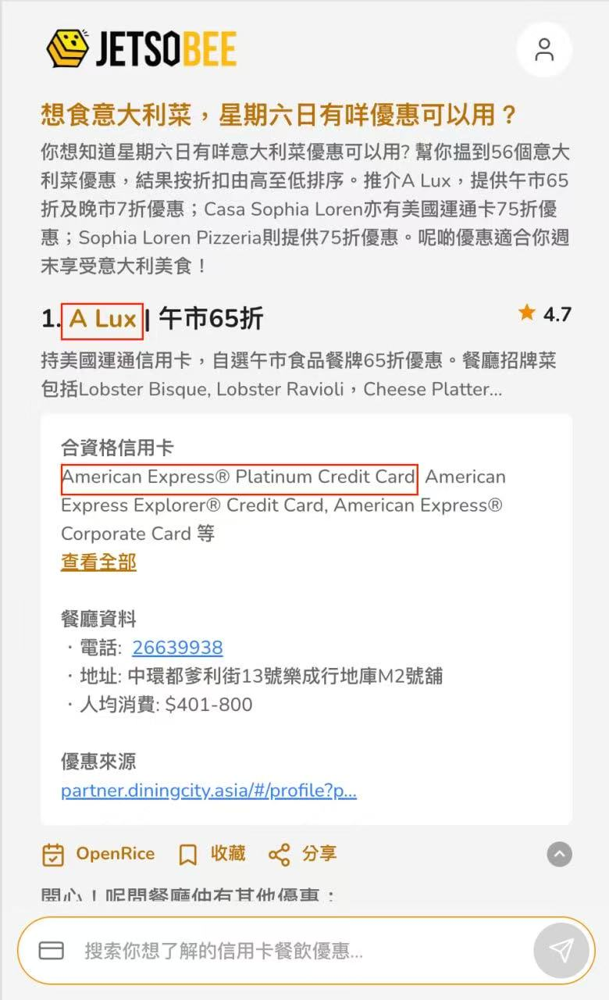
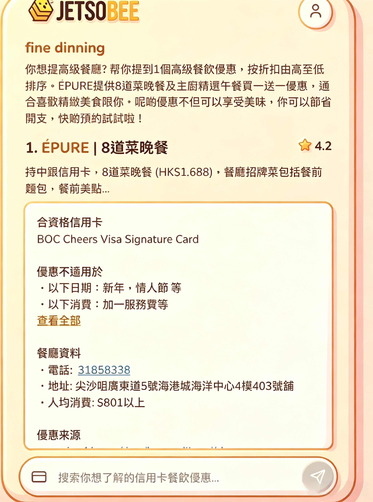

意图不够清楚
短 Query 缺少上下文，原有逻辑的意图识别准确率只有 40%。
IT 英皇 · 银行合作项目
为银行合作方设计 Customer-to-Offer 智能推荐 Agent，帮助用户从模糊的消费场景出发，获得匹配的信用卡优惠。

01 / THE PROBLEM
合作方希望提升信用卡使用率并减少退卡。初版产品面对短句、口语化与多意图查询时，常常无法正确理解场景；细碎的优惠资料也让回答出现幻觉。
短 Query 缺少上下文，原有逻辑的意图识别准确率只有 40%。
优惠信息以碎片化文本储存，检索命中后仍难以确保推荐与场景匹配。
02 / THE APPROACH
我从超过 100 个 bad case 开始，重新定义 Query 理解与优惠检索的连接方式。
归类短 Query、场景缺失与表达歧义，迭代 Query 逻辑并加入短 Query 联想能力。
以 offer_id 为核心重新 chunking，并加入全局召回与关键词混合召回，让同一优惠的规则完整可用。
组织 200 名用户测试，以问卷与行为反馈推动 3 轮产品细节优化，确认推荐的可理解性与可用性。

Agent 把一句“周末想吃大利菜”，转成一条可以立即判断和使用的推荐。
03 / OUTCOME
从猜用户想要什么，
到给出更对的选择。
MY RESPONSIBILITY